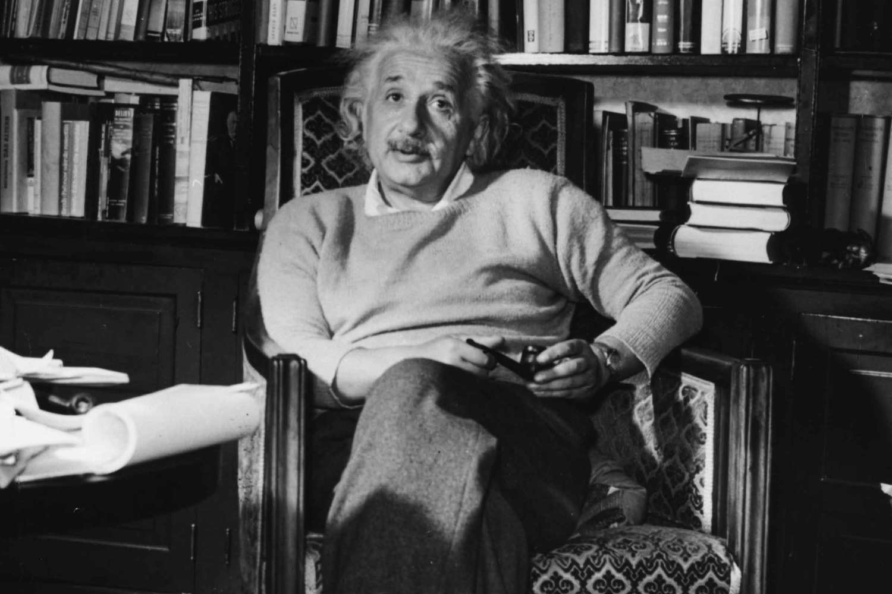

1879
Birth : Albert Einstein was born in Ulm, in the Kingdom of Württemberg in the German Empire. He was born into a Jewish family.
1885-1888
Einstein attended primary and secondary school in Munich, Germany. He showed an aptitude for mathematics and physics from a young age.
1902-1909
After graduating from the Polytechnic Institute in Zurich, Switzerland, Einstein worked as a patent examiner at the Swiss Patent Office in Bern. During this time, he continued to explore scientific ideas in his spare time.
1905
In 1905, Einstein published four groundbreaking papers in the scientific journal Annalen der Physik, addressing the photoelectric effect, Brownian motion, special relativity, and the equivalence of mass and energy (E=mc^2). This year is often referred to as his "Annus Mirabilis" (Miracle Year).
1906
Einstein obtained his Ph.D. from the University of Zurich in 1906, based on his thesis titled "A New Determination of Molecular Dimensions."
1919
Einstein married Mileva Maric in 1903, and they had two sons, Hans Albert and Eduard. The couple eventually divorced in 1919. Einstein later married Elsa Löwenthal in 1919.
1915
Einstein published his theory of general relativity, which expanded on his special theory of relativity and described gravity as the curvature of spacetime by mass and energy. This theory made several predictions that were later confirmed through observations.
1921
Einstein was awarded the Nobel Prize in Physics in 1921 for his work on the photoelectric effect, which supported the theory of quantization of light.
1933
In response to the rise of the Nazi regime in Germany, Einstein immigrated to the United States and accepted a position at the Institute for Advanced Study in Princeton, New Jersey.
1930s
Einstein's famous equation, E=mc^2, played a role in the development of atomic weapons. He signed a letter to President Franklin D. Roosevelt in 1939, urging the U.S. to develop an atomic bomb, fearing that Nazi Germany might do so first.
1934
Einstein continued to work on theoretical physics and became an advocate for civil rights, pacifism, and social justice. He also made efforts to promote scientific education.
1955
Albert Einstein passed away in Princeton, New Jersey, on April 18, 1955, at the age of 76. His contributions to science and his impact on our understanding of the universe continue to be celebrated and remembered to this day.

Special Theory of Relativity (1905):
Einstein's groundbreaking theory introduced the concept that time and space are relative and interconnected, challenging classical physics. The famous equation E=mc² is a result of this theory, demonstrating the equivalence of mass and energy.
General Theory of Relativity (1915):
Building upon his special theory, Einstein proposed the general theory of relativity, which explained the gravitational force as the curvature of spacetime caused by mass. This theory predicted the bending of light around massive objects and was later confirmed through observations.
Photoelectric Effect (1905):
Einstein's work on the photoelectric effect established the concept of quantization in light. He showed that light consists of discrete packets of energy called "photons," contributing to the development of quantum mechanics.
Brownian Motion (1905):
Einstein explained the random motion of particles suspended in a fluid, known as Brownian motion, providing strong evidence for the existence of atoms and molecules.
Mass-Energy Equivalence (1905):
His special theory of relativity led to the famous equation E=mc², demonstrating that mass and energy are interchangeable, which had profound implications for nuclear physics.
Einstein Field Equations (1915):
These equations, part of the general theory of relativity, describe how matter and energy influence the curvature of spacetime and provide the basis for modern gravitational physics.
Predicted Gravitational Waves (1916):
Einstein's theory predicted the existence of gravitational waves—ripples in spacetime caused by massive accelerating objects. These were detected for the first time in 2015, confirming his theory a century later.
Quantum Mechanics Critique:
While Einstein was a pioneer in quantum physics, he was also known for his skepticism about the completeness of quantum mechanics, famously saying, "God does not play dice with the universe."
Nobel Prize in Physics (1921):
Einstein was awarded the Nobel Prize for Physics in 1921 for his work on the photoelectric effect, which laid the foundation for the theory of quantum mechanics.
Humanitarian Efforts:
Beyond his scientific work, Einstein was a vocal advocate for civil rights, pacifism, and disarmament. He co-authored the Russell-Einstein Manifesto in 1955, highlighting the dangers of nuclear weapons.
Academic Positions:
Einstein held various academic positions, including at the University of Zurich, the University of Prague, and later at the Institute for Advanced Study in Princeton, where he spent much of his career.
Einstein's Brain:
After his death, Einstein's brain was preserved for scientific study. Researchers examined it to better understand the neurological basis of his exceptional intellectual abilities.
Non-scientific legacy
While traveling, Einstein wrote daily to his wife Elsa and adopted stepdaughters Margot and Ilse. The letters were included in the papers bequeathed to the Hebrew University of Jerusalem. Margot Einstein permitted the personal letters to be made available to the public, but requested that it not be done until twenty years after her death (she died in 1986). Barbara Wolff, of the Hebrew University's Albert Einstein Archives, told the BBC that there are about 3,500 pages of private correspondence written between 1912 and 1955.
sEinstein's right of publicity was litigated in 2015 in a federal district court in California. Although the court initially held that the right had expired, that ruling was immediately appealed, and the decision was later vacated in its entirety. The underlying claims between the parties in that lawsuit were ultimately settled. The right is enforceable, and the Hebrew University of Jerusalem is the exclusive representative of that right. Corbis, successor to The Roger Richman Agency, licenses the use of his name and associated imagery, as agent for the university.
Mount Einstein in the Chugach Mountains of Alaska was named in 1955.
Mount Einstein in New Zealand's Paparoa Range was named after him in 1970 by the Department of Scientific and Industrial Research.
In popular culture

Einstein became one of the most famous scientific celebrities after the confirmation of his general theory of relativity in 1919. Although most of the public had little understanding of his work, he was widely recognized and admired. In the period before World War II, The New Yorker published a vignette in their "The Talk of the Town" feature saying that Einstein was so well known in America that he would be stopped on the street by people wanting him to explain "that theory". Eventually he came to cope with unwanted enquirers by pretending to be someone else: "Pardon me, sorry! Always I am mistaken for Professor Einstein."
Einstein has been the subject of or inspiration for many novels, films, plays, and works of music. He is a favorite model for depictions of absent-minded professors; his expressive face and distinctive hairstyle have been widely copied and exaggerated. Time magazine's Frederic Golden wrote that Einstein was "a cartoonist's dream come true".
Many popular quotations are often misattributed to him. For example, it is often claimed, erroneously, that he said, "The definition of insanity is doing the same thing over and over and expecting different results.
Famous Quotes
- "Imagination is more important than knowledge. For knowledge is limited, whereas imagination embraces the entire world, stimulating progress, giving birth to evolution."
- "The only source of knowledge is experience."
- "Life is like riding a bicycle. To keep your balance, you must keep moving."
- "Strive not to be a success, but rather to be of value."
- "The important thing is not to stop questioning. Curiosity has its own reason for existence."
- "Education is what remains after one has forgotten what one has learned in school."
- "A person who never made a mistake never tried anything new."
- "Peace cannot be kept by force; it can only be achieved by understanding."
- "We cannot solve our problems with the same thinking we used when we created them."
- "Imagination is everything. It is the preview of life's coming attractions."